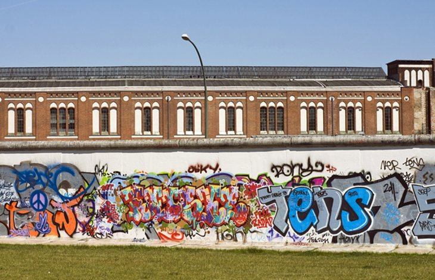

Berlin's most famous historic landmark is the Brandenburg Gate (Brandenburger Tor), once a symbol of a divided nation and now a symbol of unity and peace. This Neoclassical gate was commissioned by King Frederick Wilhelm II in 1788, and its design was inspired by the Propylaea in Athens' Acropolis. The sandstone monument is 26 meters tall, standing in the Mitte district's Pariser Platz, just a block from the Reichstag building.
During the Cold War, its physical and symbolic position as a blocked gate along the Berlin Wall made it a frequent site for demonstrations by West Berliners, and it is famous for being the backdrop of US President Ronald Reagan's 1987 entreaty to Soviet leader Mikhail Gorbachev to tear down the wall.
The Reichstag (Reichstagsgebäude) was originally completed in 1894 where the Neo-Renaissance palace served as the home of the German Empire's Imperial Diet until it burned in 1933. It was not used again until after the reunification of Germany, at which point it underwent a 10-year reconstruction and finally became the home of the German Parliament in 1999.
A highlight of this magnificent reconstruction is the replacement dome, the Kuppel, made of glass and offering superb views of the surrounding city, especially at night from the Rooftop Restaurant.
Sandwiched between the River Spree and the Kupfergraben in a 400-meter-long canal, Spree Island is better known as Museum Island (Museumsinsel), a UNESCO World Heritage Site. Here, you'll find many of the city's oldest and most important museums, including the Old Museum (Altes Museum), built in 1830 to house the Crown Jewels and other royal treasures.
The New Museum (Neues Museum), destroyed during WWII, was rebuilt and opened again in 2009 as the home of extensive collections from the Egyptian Museum, the Papyrus Collection, and the Collection of Classical Antiquities.
The Old National Gallery (Alte Nationalgalerie), opened in 1876, displays Neoclassical sculpture and paintings from 1815-1848, as well as Impressionist and early Modernist pieces. The Bode Museum houses a collection of Byzantine art, as well as a large sculpture collection spanning from medieval times to the late 1700s.
The city's most popular museum, the Pergamon features a Museum of Islamic Art, the Ishtar Gate, and reconstructed historic buildings from the Middle East. The newest museum attraction, the Humboldt Forum opened here in 2019 and houses the Ethnological Museum of Berlin and the Museum of Asian Art.
4. Berlin Wall Memorial

The Berlin Wall originated in 1961 when East Germany sealed off that half of the city to prevent citizens from fleeing to West Germany. By the time it was torn down in 1989, the four-meter-high wall extended 155 kilometers, dissected 55 streets, and possessed 293 observation towers and 57 bunkers.
Today, only small stretches of this graffiti-covered travesty remain, including a 1.4-kilometer stretch preserved as part of the Berlin Wall Memorial (Gedenkstätte Berliner Mauer), a chilling reminder of the animosity that once divided Europe.
Despite celebrating its 50th anniversary in 2020, the 368-meter-tall Berliner Fernsehturm (Berlin Television Tower) has lost none of its appeal to visitors to the city.
Originally constructed to mark the prowess of communism (it's located in the former East Berlin district), the landmark can be picked out from pretty much every corner of the city, making it more significant as a symbol of the city's reunification in the 1980s.
6. Checkpoint Charlie Museum
Also of interest is Checkpoint Charlie Museum (Museum Haus am Checkpoint Charlie). Marking the best-known crossing point between East and West Berlin, this fascinating tourist attraction features numerous displays and artifacts tracing the history of human rights, along with exhibits dealing specifically with the history of the Berlin Wall, and Checkpoint Charlie.
Situated next to the original guardhouse, the museum also highlights some of the most interesting attempts made by those trying to escape communist rule, including an original homemade air balloon used in one successful attempt.
The Gendarmenmarkt, one of Berlin's largest squares, is dominated by three historic landmark buildings: the Konzerthaus, the French Cathedral (Französischer Dom), and the German Cathedral (Deutscher Dom). This picturesque 17th-century square is now one of Berlin's top tourist attractions, hosting numerous public events each year, including classical concerts on the steps of the Konzerthaus theater in the summer, while each December the entire plaza becomes the city's famous Christmas Market.
7. German Museum of Technology
The must-see German Museum of Technology (Deutsches Technikmuseum Berlin) was established in 1983 to showcase and celebrate Germany's industrial and technological prowess. There are plenty of fun things to see in this popular museum, including taking in displays related to the Industrial Revolution, getting some hands-on experience in a reconstructed workshop, as well as a fascinating look at the vehicles that evolved alongside this rise in mechanization.
There are plenty of vehicles and aircraft on display, including a number of preserved steam engines dating back as far as 1843. Other highlights include riding in a vintage 1930s train from the museum to its locomotive depot on the weekends.
7. Memorial to the Murdered Jews of Europe
A remarkable testament to the people of Germany and their commitment to never turn a blind eye to the atrocities of the past, the Memorial to the Murdered Jews of Europe (Denkmal für die ermordeten Juden Europas)-also known as the Holocaust Memorial-is another Berlin landmark that attracts tourists from all over the world.
Sitting on the eastern side of Tiergarten, this collection of 2,711 concrete slabs covers 19,000 square meters of uneven ground. Below the sprawling memorial is an information center that houses the letters, diaries, and photographs of Holocaust victims.
Literally translated as the "Animal Garden," Berlin's Grosser Tiergarten has long been a major tourist attraction. Originally a royal hunting reserve in which deer, wild pigs, and other game were kept, it was transformed into a public park in 1700. Attractively laid out with an abundance of trees and shrubs and expanses of grass and flower borders, the Tiergarten covers 210 hectares and is a favorite spot for relaxation, walking, and boating.
9. Berlin Zoological Gardens
Berlin Zoological Gardens (Zoologischer Garten Berlin) is the oldest zoo in Germany and remains one of Berlin's most popular attractions. Established in 1844 and completely rebuilt after WWII, the zoo has earned a reputation for its many successful breeding programs and is known for providing authentic habitats for the animals.
The zoo is home to nearly 20,000 animals big and small, from Arctic wolves to zebras. Famous residents include a pair of giant pandas, two species of giraffe, and a flock of diminutive African penguins.
Berlin's Nikolai Quarter (Nikolaiviertel) is in the heart of the old city, and is where you'll find many of its oldest and most popular attractions, as well as plenty of interesting things to do beyond the usual tourist attractions.
This pedestrian-friendly quarter is known for its many small buildings set along narrow streets full of nooks and crannies, home to restaurants, cafés, and shops, along with craft workshops selling everything from basketry to wooden crafts.
Highlights include the district's many old fountains, lanterns, and lattice-windows on the older houses and historic buildings such as Ephraim Palace, built in the 1760s, which has exhibits dedicated to Berlin's rich artistic and cultural history, as well as an exquisite grand staircase. Also of note is Knoblauch House, built in 1760 and representative of the former homes of the city's wealthy Jewish merchants and tradesmen.